Add Data Sources
Inititialize
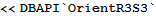
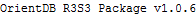
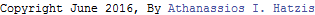
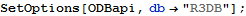
Select Data Sources Path
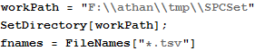
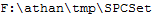
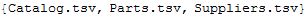
Inspect Data Files
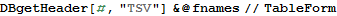
| catsid | catpid | catcost | catqnt | catdate | catchk |
| pid | pname | pcolor | pweight | punit | |
| sid | sname | saddress | scity | scountry | sstatus |
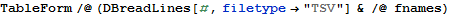
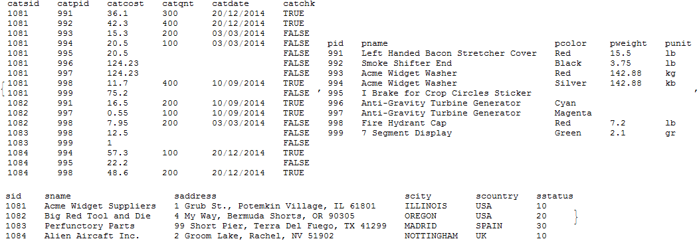
Add 3 TSV Data Sources
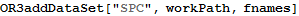